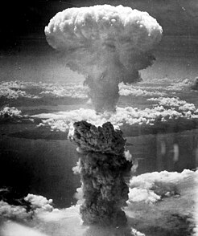

discriçao
é um dispositivo explosivo que deriva sua força destrutiva das reações nucleares, tanto de fissão (conhecida como bomba atômica) ou de uma combinação de fissão e fusão (conhecida como bomba termonuclear). Ambas as reações liberam grandes quantidades de energia a partir de quantidades relativamente pequenas de matéria. O primeiro teste de uma bomba de fissão (bomba atômica(pt-BR) ou atómica(pt-PT?)), o teste Trinity, marco para a entrada na Era Nuclear, liberou a mesma quantidade de energia de cerca de 20 mil toneladas de TNT. O primeiro teste de uma bomba termonuclear (bomba de hidrogênio) liberou uma quantidade de energia equivalente a cerca de 10 milhões de toneladas de trinitrotolueno (TNT). Uma arma termonuclear moderna, pesando pouco mais de 1,1 quilograma, pode produzir uma força explosiva equivalente à detonação de mais de 1,2 milhão de toneladas de TNT.[nota 1] Assim, mesmo um pequeno dispositivo nuclear não muito maior do que bombas tradicionais, pode devastar uma cidade inteira através da gigantesca explosão e por incêndios e radiação subsequentes. As armas nucleares são consideradas armas de destruição em massa e seu uso e controle têm sido um dos principais focos da política de relações internacionais desde a sua criação.
- Transferência de energia sem fio
- Abdul Qadir Khan
- Agência Internacional de Energia Atómica
bomba
As bombas atômicas são normalmente descritas como sendo apenas de fissão[6] ou de fusão com base na forma predominante de liberação de sua energia. Esta classificação, porém, esconde o fato de que, na realidade, ambas são uma combinação de bombas: no interior das bombas de hidrogênio, uma bomba de fissão em tamanho menor é usada para fornecer as condições de temperatura e pressão elevadas que a fusão requer para se iniciar. Por outro lado, uma bomba de fissão é mais eficiente quando um dispositivo de fusão impulsiona a energia da bomba. Assim, os dois tipos de bomba são genericamente chamados bombas nucleares.
| Bomba de nêutrons (neutrões) | Armas nucleares táticas ou de uso tático |
|---|---|
| Desarmamento | Nações Unidas |